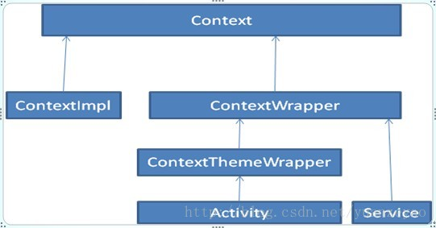

ContextWrapper 采用了 装饰模式，装饰模式动态地给对象添加额外的职责，就添加功能来说，它比子类的方式更加灵活。
概念
##Context
Context是一个全局应用环境接口，具体的实现由Android系统完成。它能访问应用资源，并且能够启动Activity，Service，接收broadcast。
它是一个抽象类，里面包含了各种方法的声明，应该将它作为一个接口类来看待。
ContextWrapper
这是一个Context的包装器，里面包含了一个mBase，ContextWrapper就是包装了mBase。而ContextThemeWrapper, Activity, Application, Service, ReceiverRestrictedContext 都继承自 ContextWrapper
ContextThemeWrapper这个是包含主题的装饰器，而Activity是它的子类。Application, Service, ReceiverRestrictedContext都是ContextWrapper的子类。每一个应用都会有一个Application。Android源码中已经有的Application有EmailApplication,LauncherApplication, Browser等等。
ContextImpl
这个是真正实现Context的类，Context是为应用环境类，它包含了跟环境相关的各种操作：getResource(资源管理，包含了getAssets,layout, string,drawable等等)， getPackageManager(包管理器）， getContentResolver(用于获取内容模型，比如访问ContentProvider)， startActivity(启动Activity)， *Service(包含一系列Service相关操作，start,bind,unbind,stop)，
ContextWrapper装饰模式的好处
我们似乎可以考虑用继承去实现Context结构，但是如果用继承的方式给Context添加功能，则将Application, ThemeContext,Service等等直接集成自ContextImpl，假如我们需要一种新的Context实现方式，则会变得非常麻烦，新的ContextImpl实现了后，Application又得去继承新的ContextImpl，一方面麻烦，另外一方面导致子类树集成非常庞大。现在用装饰模式，直接将ContextWrapper装饰的对象替换掉就可以了

引申使用
我们可以 参考 ContextWrapper的概念。在已有的的 context 上进行封装
举个例子 ，加入我们有个 listview，在每一个 item中 ，有一些自定义 view ，在操作这些自定义 view 时 ，可能需要对这个 listview 的数据进行 增删改等功能
一般的解决方法是传一个 listener 给 view，在 view 里通过 listener 进行操作 ，然而当业务逻辑比较复杂,\ 自定义嵌套比较多层时，这样的listener 需要一层层传递到最底端。
我们可以参考ContextWrapper ，将 listener 通过 context 传下去，每个 view 通过 context 来获取到对应的 listener 。
实践
1 | public static class FeedAdaperContextWrapper extends ContextWrapper implements AdapterListener { |
可以看到 我们在 adapter 内部，自定义了一个FeedAdaperContextWrapper ，继承ContextWrapper， 并实现了业务逻辑的AdapterListener接口 。
1 | FeedAdaperContextWrapper feedAdaperContextWrapper = new FeedAdaperContextWrapper(context, this); |
在初始化 Adapter 时，将自定义的 Adapter 传入 。这样在 adapter 内部使用时
1 | if (mContext instanceof AdapterListener) { |
这样就可以拿到AdapterListener ，进行对应的操作了
遇到的问题
当我们的Adapter 加载了一些自定义 view ，在自定义 view 中获取 getContext(), 发现得到的 context 并不是我们当时传入的FeedAdaperContextWrapper。
回忆下自定义 view 的产生的过程,在 adapter 中
1 | mInflater = LayoutInflater.from(mContext); |
adapter 中mContext是正常的，通过.inflate 后，子 view 就拿到我们封装后的ContextWrapper了，
mInflater 的 获取
1 | /** |
需要 hook 这一步
1 |
|
参考
http://www.jcodecraeer.com/a/anzhuokaifa/androidkaifa/2014/1223/2205.html
https://medium.com/@Zhuinden/data-and-service-sharing-to-custom-views-with-contextwrappers-and-getsystemservice-creating-a-flow-aedeabbd9567